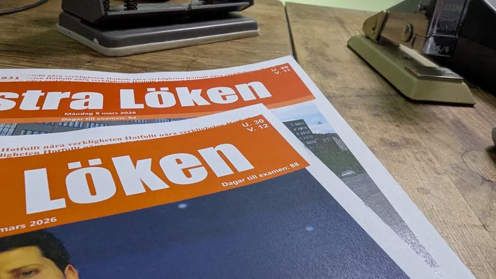

Debatt

Det är riktig svårt att räkna dagar
Några av er läsare kanske har märkt Lökens lilla nedräkning till studenten på förstasidan. Ni kanske också har märkt att den är inkorrekt, eller brukade vara det i alla fall. För vad jag har lärt mig är att det är riktigt svårt att räkna dagar. Du kanske sitter där och skrockar högt för dig själv i ditt elfenbenstorn; det är väl inte så svårt att räkna dagar. Det här är en inkorrekt och farlig idé som hotar vår demokrati i grunden. Säg att du en måndag ska räkna hur många dagar det är kvar till nästa måndag, det är inte särskilt svårt: sju dagar utbrister du. Men är det verkligen det, ty måndagen du räknar bör inte räknas in i din dagsräkning. Vidare kanske du i nuläget befinner dig i början av måndagen, är det då rättvist att anse din nuvarande dag redan passé? Tänk att behöva räkna ut det här över en mycket längre skala – över månaden. Det svåraste problemet av dem alla kommer när du inser att du har räknat till fel datum all denna tid. Ehuruväl många troligtvis fortfarande anser tidsnedräkning som en trivial sak så hoppas jag att du nu inte bara skrockar när studentdagsräkningen är fel på din veckoupplaga av Löken utan kanske skickar in ett starkt ordat brev till redaktionen som vi kan ignorera.